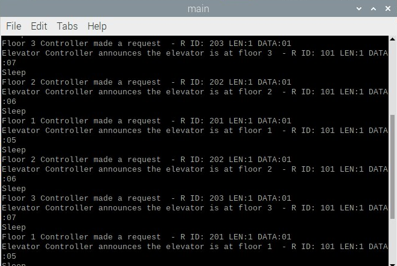

implemented the supervisor code to read the Can bus and translate the IDs and data
implemented CAN filters for the supervisor controller
Attempted to implent multi threading to account for the door shutting
it would allow the CAN messages to be stored in a Queue and receive while waiting
for the "door" to be shut (3-5 second sleep after reaching desired floor)
integrated all the CAN code for the supervisor controller
Integration Testing
Valitation Testing

The results of integration testing from the terminal